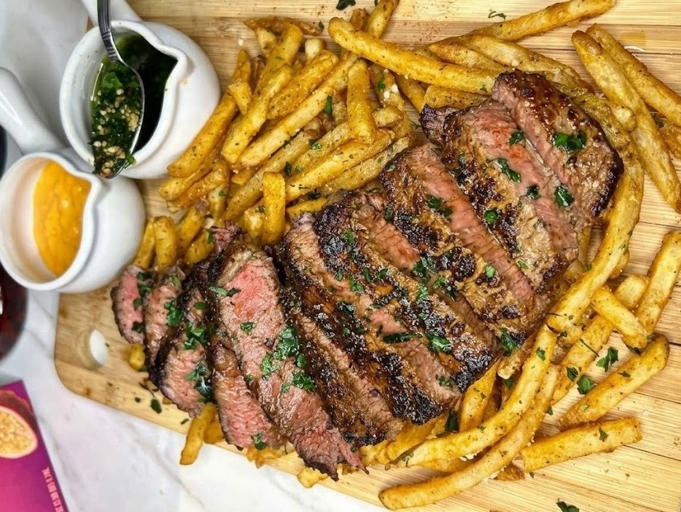
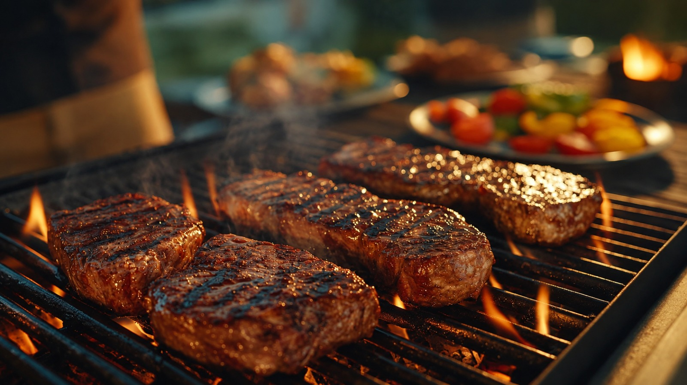
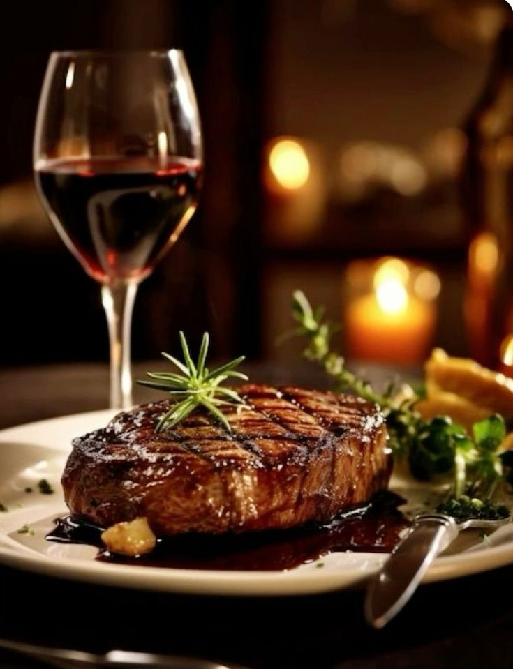

Bife de Chorizo a la Parrilla
Jugoso corte de carne a la parrilla servido en láminas sobre una generosa cama de papas fritas crujientes y sazonadas. Acompañado de chimichurri artesanal y salsa especial de la casa.


En La Vaca Roja seleccionamos los mejores cortes y los llevamos al punto exacto de cocción sobre brasas, para ofrecerte una experiencia de parrilla auténtica en cada visita.

Jugoso corte de carne a la parrilla servido en láminas sobre una generosa cama de papas fritas crujientes y sazonadas. Acompañado de chimichurri artesanal y salsa especial de la casa.

Selección de cortes y achuras a la parrilla, ideal para compartir, acompañada de chimichurri de la casa.

Brochetas marinadas con nuestra receta tradicional, asadas al carbón y servidas con papa y choclo.